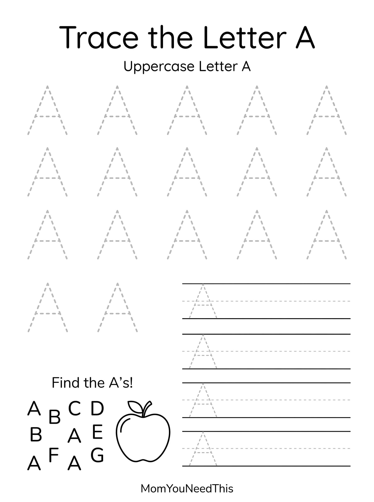
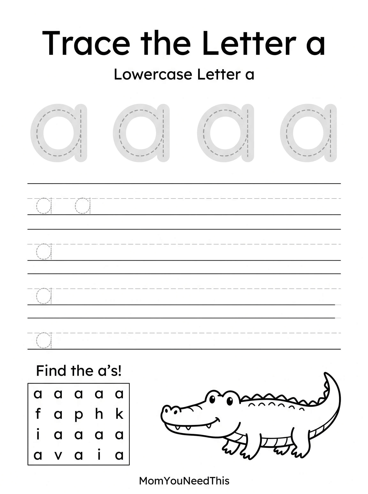

Letter A & a Practice Connect Uppercase A With Lowercase a
This free printable letter a uppercase lowercase practice gives toddlers and preschoolers a fun, no-prep way to practice letter recognition and early literacy. Print the pages and practice letters through play.
💡 One Letter, Two Forms
Practise recognizing A and a together and help your child make the connection between uppercase and lowercase.
Free Letter A & a Printable


🔤 How To Use This Printable
- Download and print the letter pages on letter-size paper.
- Say the letter name and sound together before your child starts.
- Trace, color, or match the letters, going slowly and having fun.
- Play I-spy with the letter around the house to lock in the learning.
Free Lowercase a Tracing Printable


🔎 What To Practise
Point to A and say "uppercase A." Then point to a and say "lowercase a."
Help your child notice that although they look different, they are both forms of the same letter.
🧠 Make The Connection
Look for the letter A in everyday places such as books, signs, labels and familiar words. See if your child can find both uppercase A and lowercase a.
Keep the activity short and playful. Repeatedly seeing the two forms together can help children become more familiar with the connection.
🎨 Keep Exploring Free Letter Activities
More uppercase and lowercase letter activities will be added as we continue building the alphabet collection.
🎁 View All Free Resources❓ Letter A Uppercase Lowercase Practice FAQ
Is this letter a uppercase lowercase practice printable really free?
Yes — this letter a uppercase lowercase practice printable is 100% free to download and print at home. No signup and no payment needed. Just tap the download button and print as many copies as you like.
What ages is this printable best for?
It is made for toddlers and preschoolers. Little ones can enjoy it with a grown-up’s help, while older preschoolers can work on it more independently.
How can we practice the letters?
Say each letter’s name and sound as your child traces or colors it. Short, playful sessions a few times a week work best.
🔗 More Free Printables You’ll Love
- Free Alphabet Coloring Pages Free printable alphabet coloring pages for little learners.
- Free Lowercase Letter A Free printable lowercase letter a for little learners.
- Free Uppercase Letter A Free printable uppercase letter a for little learners.
- Free Uppercase Lowercase Letter Connection Free printable uppercase lowercase letter connection for little learners.